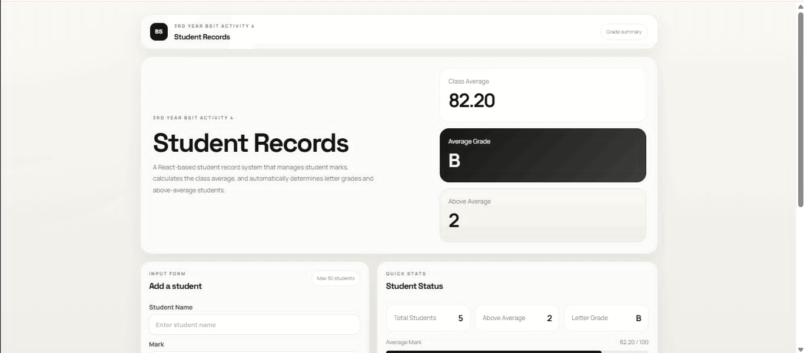
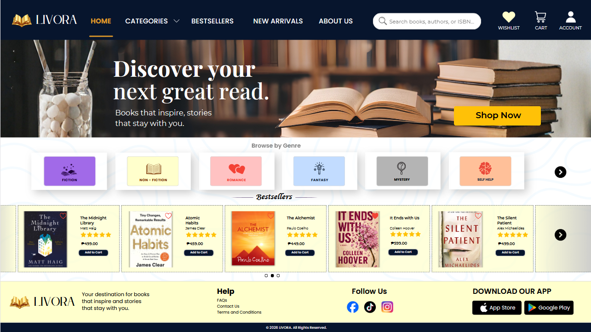
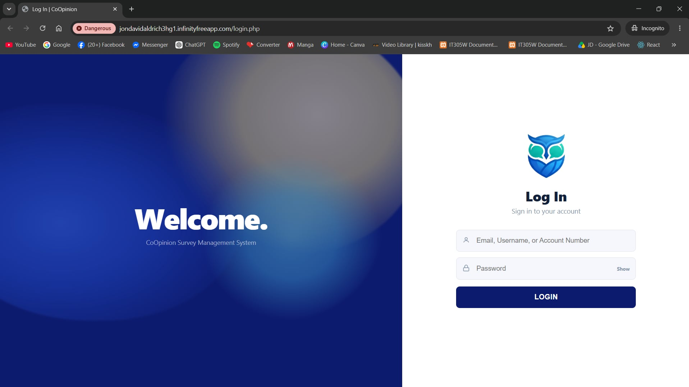

01 / STUDENT MANAGEMENT
Student Records System
A student management dashboard that organizes academic records, calculates class averages, and simplifies grade monitoring.
A LITTLE INTRODUCTION ⟡
Hello, I'm Daniella Jade S. Baldo — a third-year BSIT student exploring the sweet spot between thoughtful design and useful technology.
An eager student exploring the art of web development and thoughtful design. I love turning ideas into beautiful, user-friendly digital experiences — one detail at a time.
Isaiah 60:22 — "At the right time, I, the LORD, will make it happen"
Hello there! I am Daniella Jade S. Baldo, a student with a growing passion for web development and creative design, from BSIT 3H-G1. I enjoy bringing ideas to life through thoughtful layouts, harmonious colors, and meaningful digital experiences.
My goal is to create work that balances visual personality with clarity, accessibility, and purpose.
A collection of ideas, crafted with purpose and curiosity.

A student management dashboard that organizes academic records, calculates class averages, and simplifies grade monitoring.

An e-commerce bookstore interface featuring curated book collections, genre-based browsing, and a user-friendly shopping experience.

A web-based survey management platform focused on structured survey workflows, response organization, and efficient data handling.
Project previews represent work and interfaces developed during my learning journey.